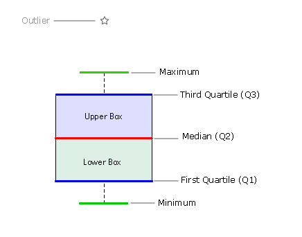

| How it works? |
|
Box and Whisker chart helps in interpreting the distribution of data. It gives us an idea where most of the numbers reside, i.e. where the frequency of numbers are more. 'Five-number summary' principle is used to render Box and Whisker plots. This principle helps to provide a statistical summary for a given set of numbers. It gives information about the range (minimum and maximum numbers), the center (median) and the spread (upper and lower quartiles) for the set of values provided. A simple illustration of a Box and Whisker plot is given below:  Note: There is another principle named as 'Seven-number summary' which is not used in the current implementation. To execute the five-number summary we have used the Quartiles method. Using this method, a set of numbers are divided into four equal parts by three quartiles - {Q1 (lower quartile), Q2 (median), and Q3 (upper quartile)}. Note: There are two other methods, namely, Deciles and Percentiles to execute the five-number summary which are not used in this implementation. Before proceeding let's discuss some of the formulae that are used in the chart: Note: All the formulae are calculated after sorting the provided set of data in ascending order. Mean is the usual average. The formula to calculate mean is ∑Xi /N, where N is the total number of elements in a set of data, X is the data points or values present in the set of data, and i is the position of the values in the set of data. To find the median, first you need to arrange the given set of data in ascending order (from the least to the greatest number). The element that resides in the middlemost position is said to be the median. This is easy to derive when the set of data contains odd number of elements. You can also use the formula (N+1)/2 to find the position, where N is the number of elements in the given set of data. But in case the set of data consists of even number of elements, you get two middle positions. The average of the two numbers residing in the middle gives the median. The median divides the data into a lower half and an upper half. The lower quartile is the middle value of the lower half, i.e. the element between the minimum number and the median. The formula to find the position of the Lower Quartile when there are odd number of elements is (N+1)/4 and for even number of elements is N/4. The upper quartile is the middle value that resides between the maximum number and the median. The formula to find the position of the Upper Quartile when there are odd number of elements is (3N+3)/4 and that for even number of elements is 3N/4. Mean deviation is the average of the absolute differences between each individual value and the mean. It gives us an idea of how spread out the set of value is from the center. The formula to calculate Mean Deviation is ∑|Xi - mean|/N, where N is the total number of elements in a set of data, X is the data points or values present in the set of data, and i is the position of the values in the set of data. For grouped data the formula stands out to be ∑f |Xi - mean|/N, where f is the frequency of occurrence. The process to calculate the Mean Deviation is given below:
Standard deviation is the measure of the dispersion of a set of data from its mean. It gives an idea of how spread out the set of value is from the mean. The more spread apart the data, the higher the deviation. The formula to calculate Standard Deviation is √ (∑ (Xi - mean) ²/N), where N is the total number of elements in a set of data, X is the data points or values present in the set of data, and i is the position of the values in the set of data. The process to calculate the Standard Deviation is given below:
The distance between the upper quartile and the lower quartile is called the Interquartile range. Quartile deviation is half the distance between the two quartiles, i.e. half the Interquartile range. It is also called the semi interquartile range. The formula to calculate Quartile Deviation is (Q3-Q1)/2. |
| Providing Data |
The format of data provided in Box and Whisker chart is similar to other Multi-series charts. The only difference is, instead of providing a single value we provide data as a set of numbers. To calculate the five summary numbers, the chart internally arrange the numbers provided in a <set> element in ascending order. By default, comma (,) is used to separate the numbers. The data separator is customizable. You can set the symbol as per your requirement by using the attribute dataSeparator in the <chart> element. For example, you can set dataSeparator as ';' and then use the same symbol in the <set> element to separate the numbers (35; 57; 89; -14). The data for same can be listed as under: |
<chart caption='Visits to a Website' subCaption='In three years' dataSeparator=';'>
...
<dataset seriesName="January" lowerBoxColor='55236E' upperboxColor='CBBFF9'>
<set value='160;133;35;67;89;107;59' />
<set value='139;67;75;114;39;67;191' />
<set value='200;107;197;289;53;26;97' />
</dataset>
...
</chart>{
"chart":{
"caption":"Visits to a Website",
"subcaption":"In three years",
"dataseparator":";"
},
"dataset":[{
"seriesname":"January",
"lowerboxcolor":"55236E",
"upperboxcolor":"CBBFF9",
"data":[{
"value":"160;133;35;67;89;107;59"
},
{
"value":"139;67;75;114;39;67;191"
},
{
"value":"200;107;197;289;53;26;97"
}
]
}
]
} |